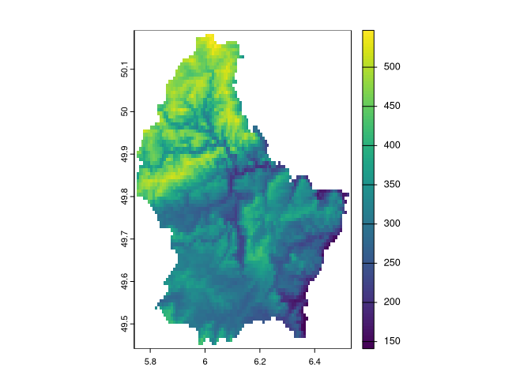

The goal of patternogram is to quantify the spatial autocorrelation of values from a set of points or a raster object. It does this by calculating the dissimilarity between pairs of points at different distances, and then grouping these dissimilarity estimates into distance intervals to create a patternogram. The patternogram can be used to identify the spatial scale at which the pattern of the points or raster changes and to compare the patterns of different sets of points or rasters.
Installation
You can install the development version of patternogram from GitHub with:
# install.packages("devtools")
devtools::install_github("Nowosad/patternogram")Example
library(patternogram)
library(terra)
#> terra 1.8.60
r = rast(system.file("ex/elev.tif", package = "terra"))
plot(r)
pr = patternogram(r)
pr
#> # A tibble: 15 × 3
#> np dist dissimilarity
#> * <int> <dbl> <dbl>
#> 1 2920 2300 42.3
#> 2 7904 6895 55.5
#> 3 11508 11495 62.9
#> 4 13683 16100 69.2
#> 5 14655 20700 72.5
#> 6 14795 25300 79.2
#> 7 13410 29900 85.1
#> 8 11937 34500 94.8
#> 9 9645 39100 108.
#> 10 7408 43700 129.
#> 11 5653 48300 146.
#> 12 4220 52900 164.
#> 13 2968 57450 176.
#> 14 2038 62000 186.
#> 15 1196 66600 197.
plot(pr)
Documentation
Take a look at a conference presentation:
- Exploring spatial autocorrelation and variable importance in machine learning models using patternograms, 2023-09-06, European Conference of Ecological Modelling 2023, Leipzig - slides
Contibution
Contributions to this package are welcome - let us know if you have any suggestions or spotted a bug. The preferred method of contribution is through a GitHub pull request. Feel also free to contact us by creating an issue.